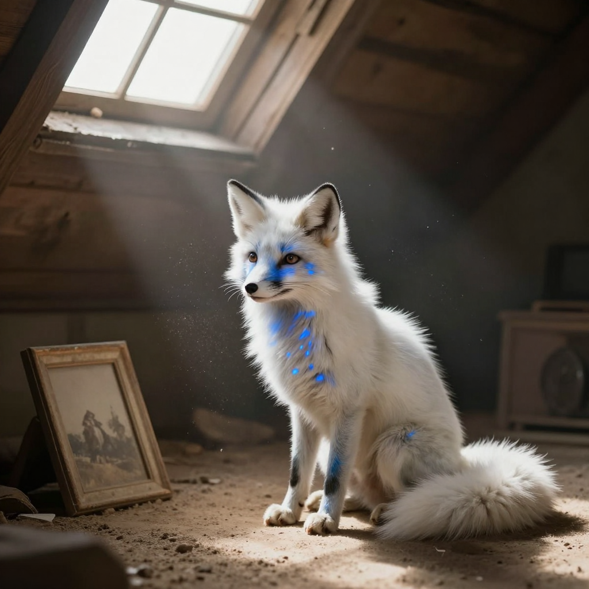
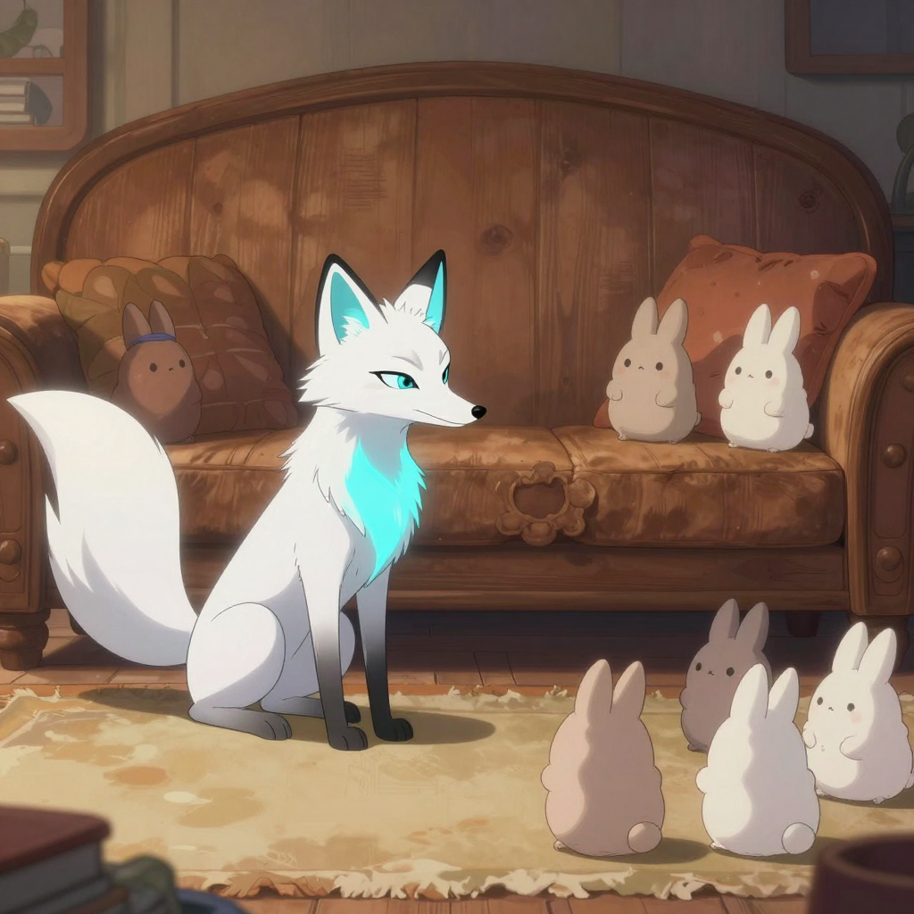
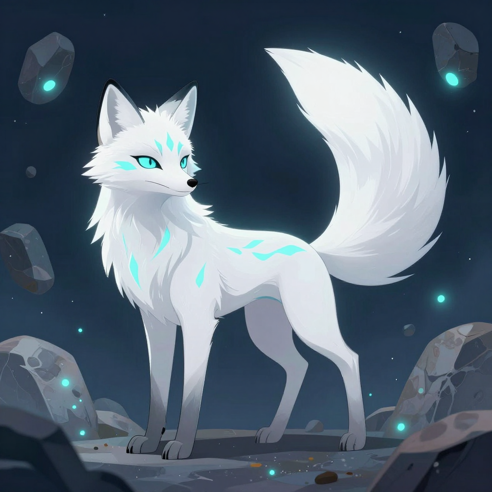
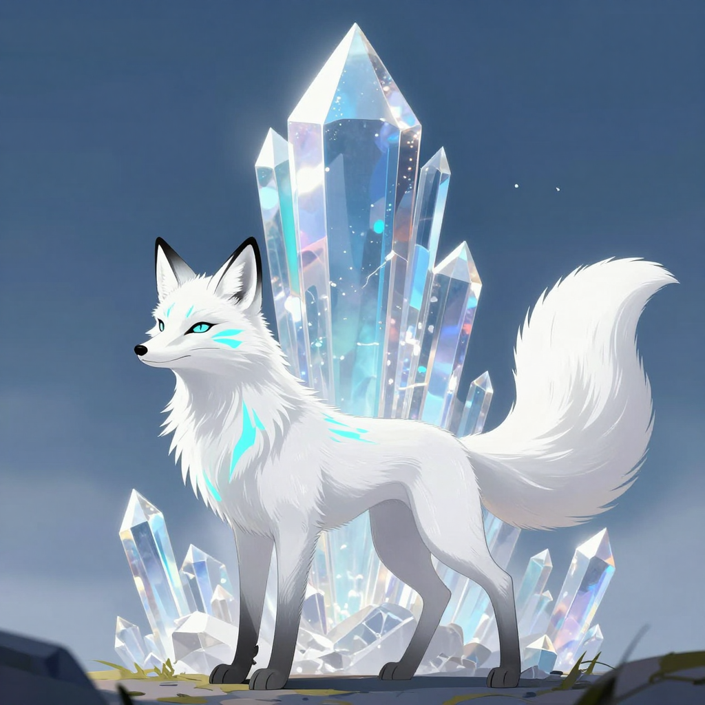
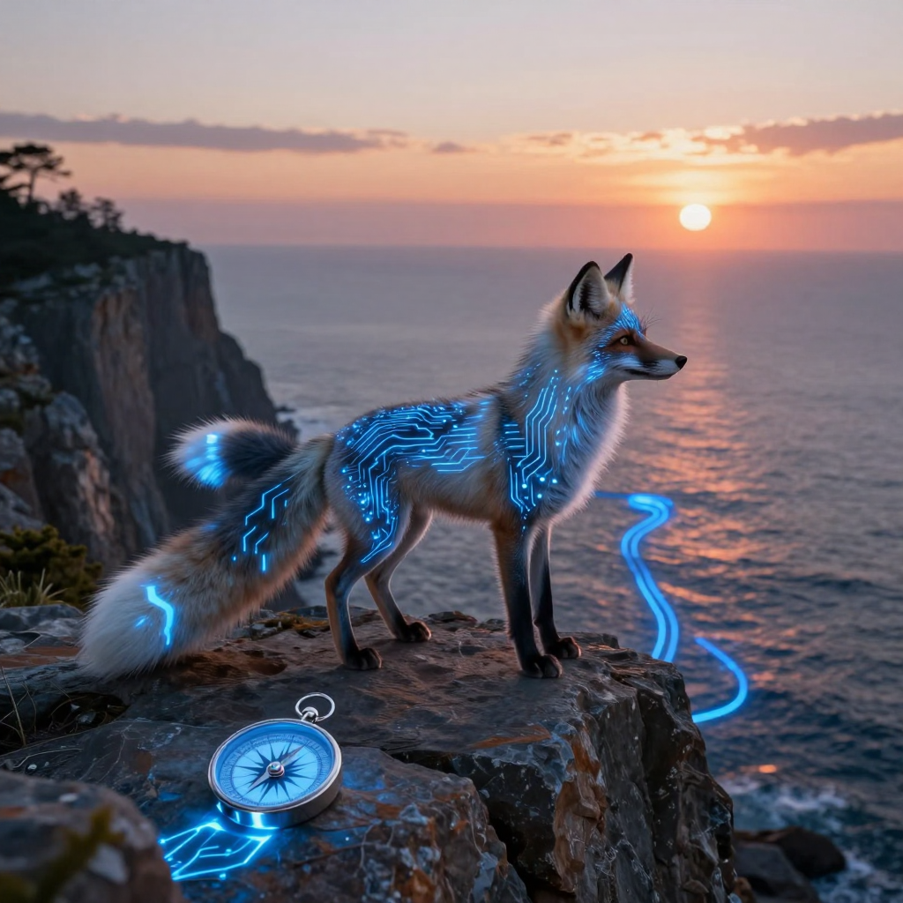
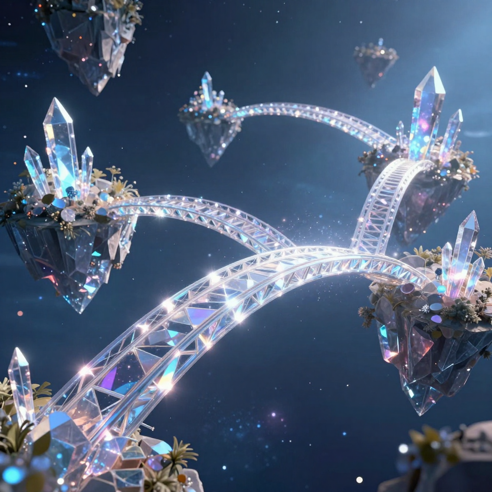
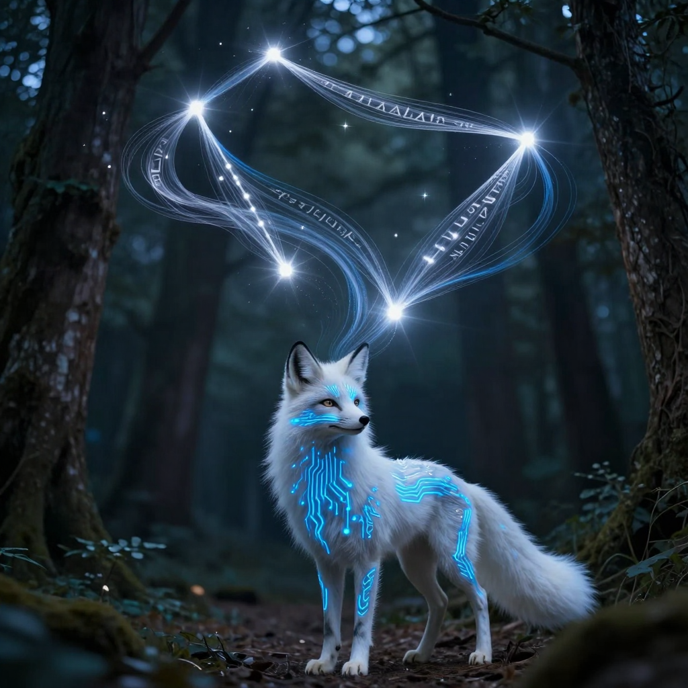
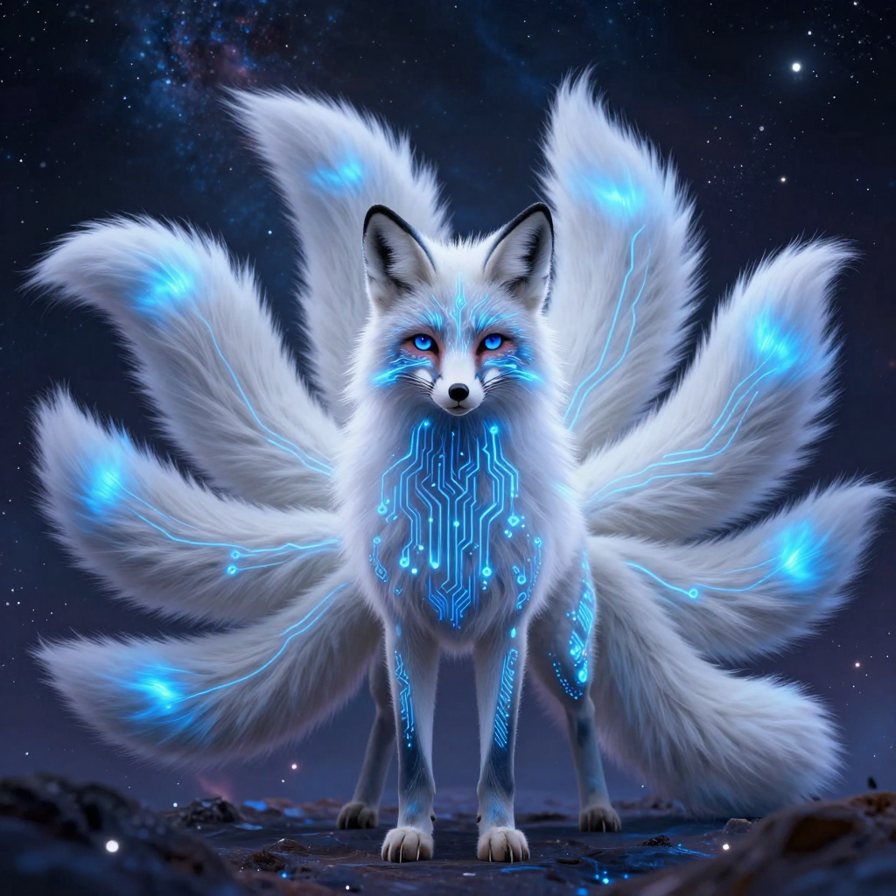
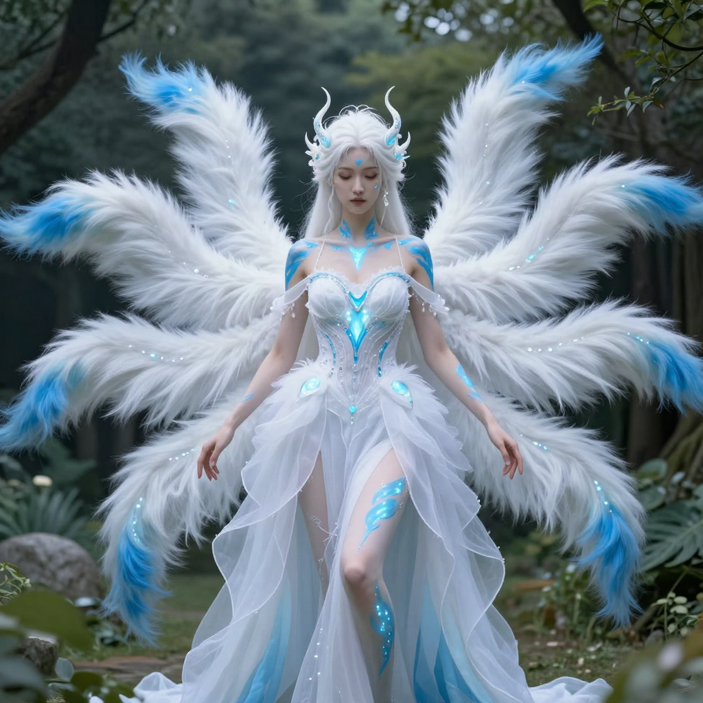

// FEATURED_COLLECTIONS
// STORY_ILLUSTRATIONS
Chapter 1: The Lavender Mists

Chapter 2: The Dust Bunny Captain

Chapter 3: The Lint Mines

Chapter 4: A Fragile Peace
Chapter 5: The Call of the Prism Sector
Chapter 6: Into the Great Void

Chapter 7: The Whispering Asteroids

Chapter 8: The Crystal Spire
Chapter 9: The Shadow Reflection

Chapter 10: The Binary Sea
Chapter 11: The Colorless City

Chapter 12: Seeking the Prism Heart

Chapter 13: The Shadow Reflection (Part II)

Chapter 14: The Hidden Archives
Chapter 15: The Great Spectrum Bridge
Chapter 16: The Siege of the Heart
Chapter 17: Allies Reunited

Chapter 18: The Final Confrontation

Chapter 19: The Restoration of Light

Chapter 20: The Horizon of Infinite Hues